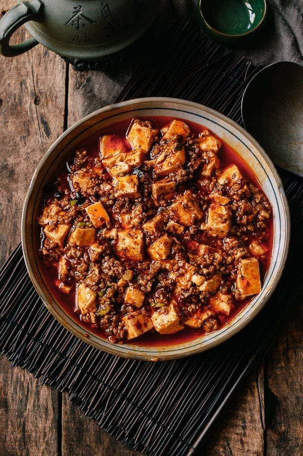

Mapo Tofu

Why you should make this recipe
This traditional Sichuan dish is made of silken tofu and ground pork, packed with málà flavor from chili oil and Sichuan peppercorns. The combination of textures and flavors, served over steamed rice is absolutely unbeatable. I love silken tofu and this dish is one of the most hearty, comforting ways to prepare it!
Ingredients
- ½ cup oil
- 1-2 fresh Thai bird chili pepper, thinly sliced
- 6-8 dried red chilies, roughly chopped
- 3 T finely minced ginger
- 3 T garlic
- 8 oz ground pork
- 1-2 T spicy bean sauce
- 2/3 c low sodium chicken broth
- 1/4 c water
- 1½ t cornstarch
- 1/4 t sesame oil
- 1/ t sugar
- 1 scallion finely chopped
Steps
- First, we toast the chilies. If you have homemade toasted chili oil, you can skip this step. Heat your wok or a small saucepan over low heat. Add half of the oil and throw in the fresh and dried peppers. Stir occasionally and heat until fragrant, about 5 minutes, ensuring that the peppers don’t burn. Remove from heat and set aside.
- Heat the remaining half of the oil in your wok over medium heat. Add the ginger. After 1 minute, add the garlic. Fry for another minute, and then turn up the heat to high and add the ground pork. Break up the meat and fry it until it’s cooked through. Add your ground Sichuan peppercorns and stir for about 15-30 seconds, taking care to not let it burn, as it will turn bitter if it does.
- Add the spicy bean sauce to the mixture and stir it in well. Add the chicken broth to the wok and stir. Let this simmer for a minute or so. While that's happening, ready your tofu and combine the water and cornstarch in a small bowl.
- Add the cornstarch mixture to your sauce and stir. Let it bubble away until the sauce starts to thicken. (If it gets too thick, splash in a little more water or chicken stock.)
- Then add your chili oil from before—peppers and all! If you are using homemade chili oil, ONLY use the standing oil, as it's likely that you have salted it and you only want the oil, not additional salt. Stir the oil into the sauce, and add the tofu. Use your spatula to gently toss the tofu in the sauce. Let everything cook for 3-5 minutes. Add the sesame oil and sugar (if using) along with the scallions and stir until the scallions are just wilted.
- Serve over rice with a last sprinkle of Sichuan peppercorn powder as a garnish if desired.